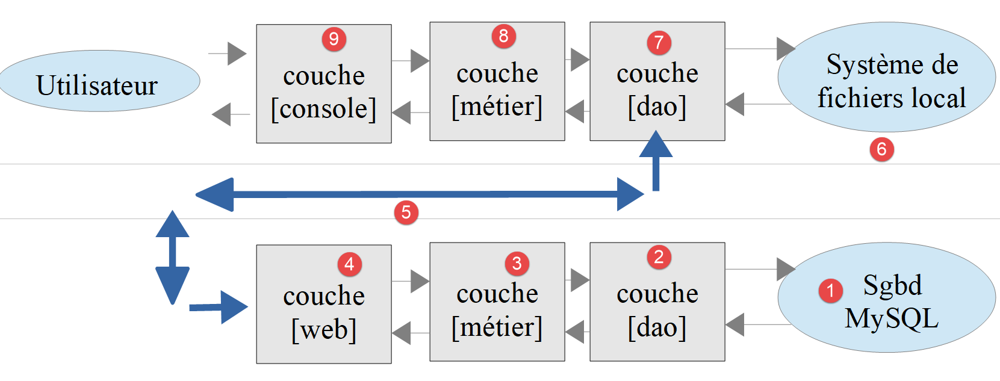
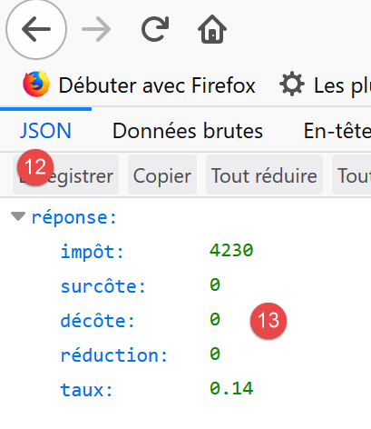
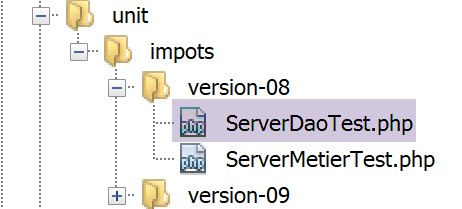

18. Übungsaufgabe – Version 8
Wir werden die Beispielanwendung – Version 5 (Link-Absatz) – noch einmal aufgreifen und sie in eine Client/Server-Anwendung umwandeln.
18.1. Einführung
Die Architektur von Version 5 sah wie folgt aus:

- Die als [dao] (Data Access Objects) bezeichnete Schicht übernimmt die Interaktion mit der MySQL-Datenbank und dem lokalen Dateisystem;
- die als [business] bezeichnete Schicht führt die Steuerberechnung durch;
- Das Hauptskript fungiert als Koordinator: Es instanziiert die Schichten [DAO] und [business logic] und kommuniziert anschließend mit der Schicht [business logic], um die erforderlichen Aufgaben auszuführen;
Wir werden diese Architektur auf die folgende Client/Server-Architektur migrieren:

- In [2] werden wir die [DAO]-Schicht aus Version 5 wiederverwenden und dabei die Methoden für den Zugriff auf das lokale Dateisystem entfernen. Diese Methoden werden in die [DAO]-Schicht des Clients migriert [6, 7];
- In [3] bleibt die [Business]-Schicht unverändert gegenüber Version 5, mit Ausnahme der Methoden [executeBatchImpôts, saveResults], die in die [DAO]-Schicht des Clients migriert werden [7];
- In [4] muss das Server-Skript geschrieben werden: Es muss:
- die [Business]- und [DAO]-Schichten erstellen [3, 2];
- mit dem Client-Skript kommunizieren [5, 7];
- In [7] muss die [dao]-Schicht des Clients geschrieben werden:
- Es wird ein HTTP-Client des Server-Skripts sein [4, 5];
- es wird die Methoden für den Zugriff auf das lokale Dateisystem aus der [DAO]-Schicht der Version 5 wiederverwenden;
- In [8] entspricht die [Business]-Schicht des Clients der [BusinessInterface]-Schnittstelle aus Version 5. Ihre Implementierung wird jedoch anders sein. In Version 5 führte die [business]-Schicht die Steuerberechnung durch. Hier ist es die [business]-Schicht des Servers, die diese Berechnung durchführt. Die [business]-Schicht wird daher die [DAO]-Schicht [7] aufrufen, um mit dem Server zu kommunizieren und ihn aufzufordern, die Steuer zu berechnen;
- in [9] muss das Konsolenskript die [DAO- und Geschäftsschichten] des Clients instanziieren und deren Ausführung starten;
18.2. Der Server
Wir konzentrieren uns auf die Serverseite der Anwendung.

Diese Architektur wird durch die folgenden Skripte implementiert:

18.2.1. Zwischen den Ebenen ausgetauschte Entitäten

Die zwischen den Schichten ausgetauschten Entitäten sind diejenigen aus Version 5, die im verlinkten Abschnitt beschrieben sind.
18.2.2. Die [dao]-Schicht

Die [dao]-Schicht implementiert die folgende [InterfaceServerDao]-Schnittstelle:
<?php
// namespace
namespace Application;
interface InterfaceServerDao {
// reading tax administration data
public function getTaxAdminData(): TaxAdminData;
}
- Zeile 9: Die Methode [getTaxAdminData] ruft Daten der Steuerverwaltung aus einer Datenbank ab;
Die Schnittstelle [InterfaceServerDao] wird von der folgenden Klasse [ServerDao] implementiert:
<?php
// namespace
namespace Application;
// definition of a ImpotsWithDataInDatabase class
class ServerDao implements InterfaceServerDao {
// the TaxAdminData object containing tax bracket data
private $taxAdminData;
// the [Database] type object containing the characteristics of the BD
private $database;
// manufacturer
public function __construct(string $databaseFilename) {
// store the JSON configuration of the bd
$this->database = (new Database())->setFromJsonFile($databaseFilename);
// we prepare the attribute
$this->taxAdminData = new TaxAdminData();
try {
// open the database connection
$connexion = new \PDO($this->database->getDsn(), $this->database->getId(), $this->database->getPwd());
// we want every SGBD error to trigger an exception
$connexion->setAttribute(\PDO::ATTR_ERRMODE, \PDO::ERRMODE_EXCEPTION);
// start a transaction
$connexion->beginTransaction();
// fill in the tax bracket table
$this->getTranches($connexion);
// fill in the constants table
$this->getConstantes($connexion);
// the transaction is completed successfully
$connexion->commit();
} catch (\PDOException $ex) {
// is there a transaction in progress?
if (isset($connexion) && $connexion->inTransaction()) {
// transaction ends in failure
$connexion->rollBack();
}
// trace the exception back to the calling code
throw new ExceptionImpots($ex->getMessage());
} finally {
// close the connection
$connexion = NULL;
}
}
// reading data from the database
private function getTranches($connexion): void {
…
}
// reading the constants table
private function getConstantes($connexion): void {
…
}
// returns data for tax calculation
public function getTaxAdminData(): TaxAdminData {
return $this->taxAdminData;
}
}
Dieser Code wurde im verlinkten Abschnitt vorgestellt.
18.2.3. Die [Business]-Schicht
Die [business]-Schicht implementiert die folgende [InterfaceServerMetier]-Schnittstelle:
<?php
// namespace
namespace Application;
interface InterfaceServerMetier {
// calculating a taxpayer's taxes
public function calculerImpot(string $marié, int $enfants, int $salaire): array;
}
Die Schnittstelle [InterfaceServerMetier] wird von der folgenden Klasse [ServerMetier] implementiert:
<?php
// namespace
namespace Application;
class ServerMetier implements InterfaceServerMetier {
// dao layer
private $dao;
// tax administration data
private $taxAdminData;
//---------------------------------------------
// setter couche [dao]
public function setDao(InterfaceServerDao $dao) {
$this->dao = $dao;
return $this;
}
public function __construct(InterfaceServerDao $dao) {
// a reference is stored on the [dao] layer
$this->dao = $dao;
// recover data for tax calculation
// method [getTaxAdminData] may throw a ExceptionImpots exception
// we then let it go back to the calling code
$this->taxAdminData = $this->dao->getTaxAdminData();
}
// tAX CALCULATION
// --------------------------------------------------------------------------
public function calculerImpot(string $marié, int $enfants, int $salaire): array {
…
// result
return ["impôt" => floor($impot), "surcôte" => $surcôte, "décôte" => $décôte, "réduction" => $réduction, "taux" => $taux];
}
// --------------------------------------------------------------------------
private function calculerImpot2(string $marié, int $enfants, float $salaire): array {
…
// result
return ["impôt" => $impôt, "surcôte" => $surcôte, "taux" => $coeffR[$i]];
}
// revenuImposable=annualwage-discount
// the allowance has a minimum and a maximum
private function getRevenuImposable(float $salaire): float {
…
// result
return floor($revenuImposable);
}
// calculates any discount
private function getDecôte(string $marié, float $salaire, float $impots): float {
…
// result
return ceil($décôte);
}
// calculates any reduction
private function getRéduction(string $marié, float $salaire, int $enfants, float $impots): float {
..
// result
return ceil($réduction);
}
}
Dieser Code wurde bereits in Version 1 im verlinkten Abschnitt behandelt. Seine objektorientierte Version mit einer Datenbank wurde im verlinkten Abschnitt vorgestellt.
18.2.4. Das Server-Skript

Das Server-Skript implementiert die [Web]-Schicht [4]. Das Skript [impots-server] wird durch die folgende JSON-Datei [config-server.json] konfiguriert:
{
"rootDirectory": "C:/myprograms/laragon-lite/www/php7/scripts-web/impots/version-08",
"databaseFilename": "Data/database.json",
"taxAdminDataFileName": "Data/taxadmindata.json",
"relativeDependencies": [
"/Entities/BaseEntity.php",
"/Entities/ExceptionImpots.php",
"/Entities/TaxAdminData.php",
"/Entities/Database.php",
"/Dao/InterfaceServerDao.php",
"/Dao/ServerDao.php",
"/Métier/InterfaceServerMetier.php",
"/Métier/ServerMetier.php"
],
"absoluteDependencies": ["C:/myprograms/laragon-lite/www/vendor/autoload.php"],
"users": [
{
"login": "admin",
"passwd": "admin"
}
]
}
- Zeile 1: das Stammverzeichnis, von dem aus Dateipfade gemessen werden;
- Zeile 2: die JSON-Konfigurationsdatei für die MySQL-Datenbank;
- Zeile 3: die JSON-Datei mit den Steuerverwaltungsdaten;
- Zeilen 5–14: die Anwendungsdateien;
- Zeile 15: die Abhängigkeit von Bibliotheken von Drittanbietern, in diesem Fall Symfony;
- Zeilen 16–20: das Array der Benutzer, die zur Nutzung der Anwendung berechtigt sind;
Die JSON-Dateien [database.json, taxadmindata.json] stammen aus Version 5, wie im verlinkten Abschnitt beschrieben.
Das Skript [impots-server] implementiert die [Web]-Schicht wie folgt:
<?php
// strict adherence to declared types of function parameters
declare (strict_types=1);
// namespace
namespace Application;
// error handling by PHP
//ini_set("display_errors", "0");
//
// configuration file path
define("CONFIG_FILENAME", "Data/config-server.json");
// we retrieve the configuration
$config = \json_decode(file_get_contents(CONFIG_FILENAME), true);
// include the necessary script dependencies
$rootDirectory = $config["rootDirectory"];
foreach ($config["relativeDependencies"] as $dependency) {
require "$rootDirectory$dependency";
}
// absolute dependencies (third-party libraries)
foreach ($config["absoluteDependencies"] as $dependency) {
require "$dependency";
}
// definition of constants
define("DATABASE_CONFIG_FILENAME", $config["databaseFilename"]);
//
// symfony dependencies
use \Symfony\Component\HttpFoundation\Response;
use \Symfony\Component\HttpFoundation\Request;
// prepare JSON server response
$response = new Response();
$response->headers->set("content-type", "application/json");
$response->setCharset("utf-8");
// retrieve the current query
$request = Request::createFromGlobals();
// authentication
$requestUser = $request->headers->get('php-auth-user');
$requestPassword = $request->headers->get('php-auth-pw');
// does the user exist?
$users = $config["users"];
$i = 0;
$trouvé = FALSE;
while (!$trouvé && $i < count($users)) {
$trouvé = ($requestUser === $users[$i]["login"] && $users[$i]["passwd"] === $requestPassword);
$i++;
}
// set the response status code
if (!$trouvé) {
// not found - code 401
$response->setStatusCode(Response::HTTP_UNAUTHORIZED);
$response->headers->add(["WWW-Authenticate" => "Basic realm=" . utf8_decode("\"Serveur de calcul d'impôts\"")]);
// error msg
$response->setContent(\json_encode(["réponse" => ["erreur" => "Echec de l'authentification [$requestUser, $requestPassword]"]], JSON_UNESCAPED_UNICODE));
$response->send();
// end
exit;
}
// we have a valid user - we check the parameters received
$erreurs = [];
// you need three parameters GET
$method = strtolower($request->getMethod());
$erreur = $method !== "get" || $request->query->count() != 3;
// mistake?
if ($erreur) {
$erreurs[] = "Méthode GET requise avec les seuls paramètres [marié, enfants, salaire]";
}
// marital status is restored
if (!$request->query->has("marié")) {
$erreurs[] = "paramètre marié manquant";
} else {
$marié = trim(strtolower($request->query->get("marié")));
$erreur = $marié !== "oui" && $marié !== "non";
// mistake?
if ($erreur) {
$erreurs[] = "paramètre marié [$marié] invalide";
}
}
// the number of children
if (!$request->query->has("enfants")) {
$erreurs[] = "paramètre enfants manquant";
} else {
$enfants = trim($request->query->get("enfants"));
// number of children must be an integer >=0
$erreur = !preg_match("/^\d+$/", $enfants);
// mistake?
if ($erreur) {
$erreurs[] = "paramètre enfants [$enfants] invalide";
}
}
// we recover the annual salary
if (!$request->query->has("salaire")) {
$erreurs[] = "paramètre salaire manquant";
} else {
// salary must be an integer >=0
$salaire = trim($request->query->get("salaire"));
$erreur = !preg_match("/^\d+$/", $salaire);
// mistake?
if ($erreur) {
$erreurs[] = "paramètre salaire [$salaire] invalide";
}
}
// other parameters in the query?
foreach (\array_keys($request->query->all()) as $key) {
// valid parameter?
if (!\in_array($key, ["marié", "enfants", "salaire"])) {
$erreurs[] = "paramètre [$key] invalide";}
}
// mistakes?
if ($erreurs) {
// an error code 400 is sent to the customer
$response->setStatusCode(Response::HTTP_BAD_REQUEST);
$response->setContent(json_encode(["réponse" => ["erreurs" => $erreurs]], JSON_UNESCAPED_UNICODE));
$response->send();
exit;
}
// we have everything you need to work
// server architecture creation
$msgErreur = "";
try {
// creation of the [dao] layer
$dao = new ServerDao($config["databaseFilename"]);
// creation of the [business] layer
$métier = new ServerMetier($dao);
} catch (ExceptionImpots $ex) {
// we note the error
$msgErreur = utf8_encode($ex->getMessage());
}
// mistake?
if ($msgErreur) {
// an error code 500 is sent to the customer
$response->setStatusCode(Response::HTTP_INTERNAL_SERVER_ERROR);
$response->setContent(\json_encode(["réponse" => ["erreur" => $msgErreur]], JSON_UNESCAPED_UNICODE));
$response->send();
exit;
}
// tAX CALCULATION
$result = $métier->calculerImpot($marié, (int) $enfants, (int) $salaire);
// we return the answer
$response->setContent(json_encode(["réponse" => $result], JSON_UNESCAPED_UNICODE));
$response->send();
Kommentare
- Zeile 16: Wir laden die Konfigurationsdatei;
- Zeilen 18–26: Wir laden alle Abhängigkeiten;
- Zeile 29: Der Name der Datei [database.json];
- Zeilen 32–33: Deklaration der Klassen aus den verwendeten Bibliotheken von Drittanbietern;
- Zeilen 36–38: Wir bereiten eine JSON-Antwort vor;
- Zeilen 40–52: Wir überprüfen, ob der Benutzer, der die Anfrage stellt, tatsächlich ein autorisierter Benutzer ist;
- Zeilen 54–63: Falls nicht, senden wir einen HTTP-401-Code, der den Zugriff verweigert. Nach Erhalt dieses Codes und des HTTP-Headers [WWW-Authenticate => Basic realm=] zeigen die meisten Browser ein Authentifizierungsfenster an, in dem der Benutzer zur Anmeldung aufgefordert wird;
- Zeile 59: Die JSON-Antwort des Servers erläutert die Ursache des Fehlers. Alle Serverantworten sind eine JSON-Zeichenkette in Form eines Arrays [‘response’=>’something’];
- Zeilen 64–117: Wir überprüfen die Gültigkeit der Anfrage:
- eine GET-Anfrage mit genau drei Parametern;
- ein Parameter [married], dessen Wert „yes“ oder „no“ lauten muss;
- ein Parameter [children], dessen Wert eine ganze Zahl >= 0 sein muss;
- ein Parameter [salary], dessen Wert eine ganze Zahl >= 0 sein muss;
- Zeile 65: Jedes Mal, wenn ein Fehler erkannt wird, wird eine Fehlermeldung zum Array [$errors] hinzugefügt;
- Zeilen 120–126: Tritt ein Fehler auf, wird der HTTP-Code [400 Bad Request] an den Client gesendet (Zeile 122);
- Zeile 123: Die JSON-Antwort des Servers erläutert die Ursache des Fehlers;
- Ab Zeile 132 ist alles überprüft. Wir können die [dao, business]-Schichten instanziieren. Diese Instanziierung ist mit Aufwand verbunden und sollte nur erfolgen, wenn wir sicher sind, dass wir eine gültige Anfrage haben;
- Zeilen 130–138: Die Serverarchitektur wird erstellt. Beim Aufbau der [DAO]-Schicht kann eine [ExceptionImpots]-Ausnahme ausgelöst werden. Tritt diese Ausnahme auf, wird der Fehler protokolliert;
- Zeilen 135–138: Wenn eine Ausnahme aufgetreten ist, senden wir den HTTP-Statuscode 500 an den Client. Dieser Code zeigt an, dass der Server abgestürzt ist;
- Zeile 143: Die Antwort erläutert die Ursache des Fehlers;
- Zeile 148 : Die Steuerberechnung wird an die [business]-Schicht delegiert;
- Zeilen 150–151: Senden der Antwort;
Testen wir dieses Skript mit einem Browser. Rufen wir die sichere URL [https://localhost:443/php7/scripts-web/impots/version-08/impots-server.php?marié=oui&enfants=5&salaire=100000] auf:

- in [1] die angeforderte sichere URL;
- in [2] die drei Parameter [married, children, salary];
- in [3] hat Laragons Apache-Server ein selbstsigniertes SSL-Zertifikat gesendet. Der Browser hat dies erkannt und zeigt eine Sicherheitswarnung an: Er stuft die Website des Servers als nicht vertrauenswürdig ein;
- in [4] fahren wir fort;

- in [6] fahren wir fort;

- In [7] zeigt der Browser ein Fenster an, in dem sich der Benutzer anmelden kann;
- Geben Sie in [9,10] [admin] und [admin] ein;

- in [13] die JSON-Antwort des Servers;
Führen wir einige Fehlertests durch:
Wir rufen die URL [https://localhost/php7/scripts-web/impots/version-08/impots-server.php?marié=x&enfants=x&salaire=x&w=x] auf
Wir erhalten das folgende Ergebnis:

Wir fahren das MySQL-DBMS herunter und rufen die URL [https://localhost/php7/scripts-web/impots/version-08/impots-server.php?marié=oui&enfants=3&salaire=60000] auf:

18.2.5. [Codeception]-Tests
Jedes Mal, wenn wir eine neue Version des Servers erstellen, testen wir die [Business]- und [DAO]-Schichten, wie es seit Version 04 der Fall ist (siehe Absätze Link und Link).
Zunächst verknüpfen wir das Projekt [scripts-web] mit den [Codeception]-Tests. Gehen Sie dazu genauso vor wie beim Projekt [scripts-console] im Abschnitt mit dem Link. Am Ende erhalten wir ein Projekt [scripts-web], das einen Ordner [Test Files] enthält:

Wir erstellen einen Test für die [dao]-Schicht und einen für die [business]-Schicht.
18.2.5.1. Tests für die [dao]-Schicht

Der [ServerDaoTest] sieht wie folgt aus:
<?php
// strict adherence to declared types of function parameters
declare (strict_types=1);
// namespace
namespace Application;
// definition of constants
define("ROOT", "C:/myprograms/laragon-lite/www/php7/scripts-web/impots/version-08");
// configuration file path
define("CONFIG_FILENAME", ROOT . "/Data/config-server.json");
// we retrieve the configuration
$config = \json_decode(\file_get_contents(CONFIG_FILENAME), true);
// include the necessary script dependencies
$rootDirectory = $config["rootDirectory"];
foreach ($config["relativeDependencies"] as $dependency) {
require "$rootDirectory$dependency";
}
// absolute dependencies (third-party libraries)
foreach ($config["absoluteDependencies"] as $dependency) {
require "$dependency";
}
// test -----------------------------------------------------
class ServerDaoTest extends \Codeception\Test\Unit {
// TaxAdminData
private $taxAdminData;
public function __construct() {
// parent
parent::__construct();
// we retrieve the configuration
$config = \json_decode(\file_get_contents(CONFIG_FILENAME), true);
// creation of the [dao] layer
$dao = new ServerDao(ROOT . "/" . $config["databaseFilename"]);
$this->taxAdminData = $dao->getTaxAdminData();
}
// tests
public function testTaxAdminData() {
…
}
}
Kommentare
- Zeilen 9–24: Wir richten dieselbe Arbeitsumgebung ein wie die des Servers [impots-server.php]. Dies geschieht in den Zeilen 9–12 durch die Definition der beiden Konstanten, von denen die Umgebung abhängt;
- Zeilen 32–40: Wir erstellen eine Instanz der zu testenden [dao]-Schicht, wie es auch im Server-Skript [impots-server.php] geschehen ist;
- Ab diesem Punkt befinden wir uns unter denselben Bedingungen wie das Server-Skript [impots-server.php]: Wir können mit den Tests beginnen;
- Zeilen 43–45: Die Methode [testTaxAdminData] ist diejenige, die im verlinkten Abschnitt beschrieben wird;
Die Testergebnisse lauten wie folgt:

18.2.5.2. Tests der [business]-Schicht

Der Test [ServerMetierTest] wird wie folgt aussehen:
<?php
// strict adherence to declared types of function parameters
declare (strict_types=1);
// namespace
namespace Application;
// definition of constants
define("ROOT", "C:/myprograms/laragon-lite/www/php7/scripts-web/impots/version-08");
// configuration file path
define("CONFIG_FILENAME", ROOT . "/Data/config-server.json");
// we retrieve the configuration
$config = \json_decode(\file_get_contents(CONFIG_FILENAME), true);
// include the necessary script dependencies
$rootDirectory = $config["rootDirectory"];
foreach ($config["relativeDependencies"] as $dependency) {
require "$rootDirectory$dependency";
}
// absolute dependencies (third-party libraries)
foreach ($config["absoluteDependencies"] as $dependency) {
require "$dependency";
}
// test class
class ServerMetierTest extends \Codeception\Test\Unit {
// business layer
private $métier;
public function __construct() {
parent::__construct();
// we retrieve the configuration
$config = \json_decode(\file_get_contents(CONFIG_FILENAME), true);
// creation of the [dao] layer
$dao = new ServerDao(ROOT . "/" . $config["databaseFilename"]);
// creation of the [business] layer
$this->métier = new ServerMetier($dao);
}
// tests
public function test1() {
…
}
public function test2() {
…
}
..
public function test11() {
…
}
}
Kommentare
- Zeilen 9–24: Wir richten dieselbe Arbeitsumgebung ein wie beim Server [impots-server.php]. Dies geschieht in den Zeilen 9–12 durch die Definition der beiden Konstanten, von denen die Umgebung abhängt;
- Zeilen 30–38: Wir erstellen eine Instanz der zu testenden [business]-Schicht, wie es bereits im Server-Skript [impots-server.php] geschehen ist;
- Ab diesem Punkt gelten für uns dieselben Bedingungen wie für das Server-Skript [impots-server.php]: Wir können mit den Tests beginnen;
- Zeilen 40–53: Die Methoden [test1, test2…, test11] sind diejenigen, die im verlinkten Abschnitt beschrieben sind;
Die Testergebnisse lauten wie folgt:

18.3. Der Client
Wir konzentrieren uns auf die clientseitige Anwendung.

Diese Architektur wird durch die folgenden Skripte implementiert:

18.3.1. Zwischen den Schichten ausgetauschte Entitäten

Die oben aufgeführten Entitäten wurden alle beschrieben und sind bereits im Einsatz:
- [BaseEntity] im Abschnitt „Link“;
- [ExceptionImpots] im Link-Abschnitt;
- [TaxPayerData] im Link-Abschnitt;
18.3.2. Die [dao]-Schicht

Die [dao]-Ebene implementiert die folgende [InterfaceClientDao]-Schnittstelle:
<?php
// namespace
namespace Application;
interface InterfaceClientDao {
// reading taxpayer data
public function getTaxPayersData(string $taxPayersFilename, string $errorsFilename): array;
// calculating a taxpayer's taxes
public function calculerImpot(string $marié, int $enfants, int $salaire): array;
// recording results
public function saveResults(string $resultsFilename, array $taxPayersData): void;
}
- Zeile 9: Die Funktion [getTaxPayersData] lädt die Steuerzahlerdaten aus der Datei [$taxPayersFilename] in den Arbeitsspeicher. Sollten Fehler auftreten, werden diese in der Datei [$errorsFilename] protokolliert;
- Zeile 12: Die Funktion [calculateTaxes] berechnet die Steuer eines Steuerzahlers;
- Zeile 15: Die Funktion [saveResults] speichert die Daten aus dem Array [$taxPayersData] – das die Ergebnisse mehrerer Steuerberechnungen enthält – in der Datei [$resultsFilename];
Die Schnittstelle [InterfaceClientDao] wird durch die folgende Klasse [ClientDao] implementiert:
<?php
namespace Application;
// dependencies
use \Symfony\Component\HttpClient\HttpClient;
class ClientDao implements InterfaceClientDao {
// using a Trait
use TraitDao;
// attributes
private $urlServer;
private $user;
// manufacturer
public function __construct(string $urlServer, array $user) {
$this->urlServer = $urlServer;
$this->user = $user;
}
// tAX CALCULATION
public function calculerImpot(string $marié, int $enfants, int $salaire): array {
// create a HTTP customer
$httpClient = HttpClient::create([
'auth_basic' => [$this->user["login"], $this->user["passwd"]],
"verify_peer" => false
]);
// make a request to the server
$response = $httpClient->request('GET', $this->urlServer,
["query" => [
"marié" => $marié,
"enfants" => $enfants,
"salaire" => $salaire
]]);
// the answer is retrieved
$json = $response->getContent(false);
$array = \json_decode($json, true);
$réponse = $array["réponse"];
// logs
// print "$json=json\n";
// retrieve response status
$statusCode = $response->getStatusCode();
// mistake?
if ($statusCode !== 200) {
// we have an error - we throw an exception
$réponse = ["statut HTTP" => $statusCode] + $réponse;
$message = \json_encode($réponse, JSON_UNESCAPED_UNICODE);
throw new ExceptionImpots($message);
}
// we return the answer
return $réponse;
}
}
Kommentare
- Zeile 10: Wir fügen [TraitDao] ein (siehe verlinkten Absatz), das die Methoden [getTaxPayersData] und [saveResults] implementiert. Damit muss nur noch die Methode [calculateTaxes] implementiert werden. Diese wird in den Zeilen 22–49 implementiert;
- Zeilen 16–19: Der Konstruktor der Klasse [ClientDao] nimmt zwei Parameter entgegen:
- die URL [$urlServer] des Steuerberechnungsservers;
- das Array [$user] mit den Schlüsseln „login“ und „passwd“, das den Benutzer definiert, der die Anfrage stellt;
- Zeile 22: Die Methode [calculateTaxes] empfängt die drei Parameter, die an den Steuerberechnungsserver gesendet werden sollen;
- Zeilen 24–27: Es wird ein HTTP-Client erstellt mit:
- Zeile 25: die Anmeldedaten des Benutzers, der die Anfrage stellt;
- Zeile 26: der Option, die verhindert, dass der HTTP-Client die Gültigkeit des vom Server gesendeten SSL-Zertifikats überprüft;
- Zeilen 29–34: Der Server wird mit den drei erwarteten Parametern abgefragt;
- Zeile 36: Wir rufen die JSON-Antwort vom Server ab. Wenn wir den Parameter [false] bei der Methode [Response::getContent] nicht setzen, löst das [Response]-Objekt eine Ausnahme aus, sobald wir versuchen, den Antwortinhalt [Response::getContent] oder dessen HTTP-Header [Response::getHeaders] abzurufen, sofern der Antwortstatus des Servers im Bereich [3xx-5xx] liegt (Fehlerfall). Hier möchten wir unabhängig vom HTTP-Status der Antwort auf deren Inhalt zugreifen können, und sei es nur, um ihn zu protokollieren (Zeile 40);
- Zeilen 37–38: Die Antwort des Servers ist eine JSON-Zeichenkette in Form eines Arrays [‘response’=>something]. Wir rufen das [something] ab;
- Zeile 40: Wir protokollieren die JSON-Antwort im Entwicklungsmodus;
- Zeile 42: Wir rufen den Antwortstatuscode ab;
- Zeilen 44–49: Wenn der HTTP-Statuscode nicht 200 ist, ist auf unserem Server ein Problem aufgetreten. Wir lösen dann eine [ExceptionImpots]-Ausnahme aus, deren Meldung aus der JSON-Antwort des Servers besteht, an die der HTTP-Statuscode angehängt ist;
- Zeile 51: Wir geben das Ergebnis zurück, bei dem es sich um ein assoziatives Array mit den Schlüsseln [tax, surcharge, discount, reduction, rate] handelt;
18.3.3. Die [Geschäfts-]Ebene

Die [Business]-Schicht [8] implementiert die folgende [BusinessClientInterface]:
<?php
// namespace
namespace Application;
interface InterfaceClientMetier {
// calculating a taxpayer's taxes
public function calculerImpot(string $marié, int $enfants, int $salaire): array;
// batch mode tax calculation
public function executeBatchImpots(string $taxPayersFileName, string $resultsFileName, string $errorsFileName): void;
}
- Zeile 9: Die Funktion [calculateTaxes] berechnet die Steuer;
- Zeile 12: Die Funktion [executeBatchImpots] berechnet die Steuer für Steuerzahler, deren Daten in der Datei [$taxPayersFileName] enthalten sind, schreibt die Ergebnisse in die Datei [$resultsFileName] und schreibt auftretende Fehler in die Datei [$errorsFileName];
Die Schnittstelle [BusinessClientInterface] wird durch die folgende Klasse [BusinessClient] implementiert:
<?php
// namespace
namespace Application;
class ClientMetier implements InterfaceClientMetier {
// attribute
private $clientDao;
// manufacturer
public function __construct(InterfaceClientDao $clientDao) {
// the reference is stored on the [dao] layer
$this->clientDao = $clientDao;
}
// tAX CALCULATION
public function calculerImpot(string $marié, int $enfants, int $salaire): array {
return $this->clientDao->calculerImpot($marié, $enfants, $salaire);
}
// batch mode tax calculation
public function executeBatchImpots(string $taxPayersFileName, string $resultsFileName, string $errorsFileName): void {
// we let the exceptions coming from the [dao] layer flow upwards
// retrieve taxpayer data
$taxPayersData = $this->clientDao->getTaxPayersData($taxPayersFileName, $errorsFileName);
// results table
$results = [];
// we exploit them
foreach ($taxPayersData as $taxPayerData) {
// tax calculation
$result = $this->calculerImpot(
$taxPayerData->getMarié(),
$taxPayerData->getEnfants(),
$taxPayerData->getSalaire());
// complete [$taxPayerData]
$taxPayerData->setFromArrayOfAttributes($result);
// put the result in the results table
$results [] = $taxPayerData;
}
// recording results
$this->clientDao->saveResults($resultsFileName, $results);
}
}
Kommentare
- Zeilen 11–14: Der Konstruktor der Klasse [ClientMetier] erhält als Parameter eine Referenz auf die [dao]-Schicht;
- Zeilen 17–19: Die Steuerberechnung wird an die [dao]-Schicht delegiert;
- Zeilen 20–38: Die Funktion [executeBatchImpots] wurde im Abschnitt „Links“ beschrieben;
18.3.4. Das Hauptskript

Das Client-Skript [MainImpotsClient.php] implementiert die [console]-Schicht [9]. Es wird durch die folgende JSON-Datei [conf-client.json] konfiguriert:
{
"rootDirectory": "C:/Data/st-2019/dev/php7/poly/scripts-console/impots/version-08",
"taxPayersDataFileName": "Data/taxpayersdata.json",
"resultsFileName": "Data/results.json",
"errorsFileName": "Data/errors.json",
"dependencies": [
"Entities/BaseEntity.php",
"Entities/TaxPayerData.php",
"Entities/ExceptionImpots.php",
"Utilities/Utilitaires.php",
"Dao/InterfaceClientDao.php",
"Dao/TraitDao.php",
"Dao/ClientDao.php",
"Métier/InterfaceClientMetier.php",
"Métier/ClientMetier.php"
],
"absoluteDependencies": [
"C:/myprograms/laragon-lite/www/vendor/autoload.php"
],
"user": {
"login": "admin",
"passwd": "admin"
},
"urlServer": "https://localhost:443/php7/scripts-web/impots/version-08/impots-server.php"
}
- Zeile 1: das Stammverzeichnis des Clients;
- Zeile 2: die JSON-Datei mit den Steuerzahlerdaten;
- Zeile 3: die JSON-Datei mit den Ergebnissen;
- Zeile 4: die JSON-Datei mit den Fehlern;
- Zeilen 6–19: die verschiedenen Abhängigkeiten des Client-Projekts;
- Zeilen 20–23: der Benutzer, der Anfragen an den Steuerberechnungsserver sendet;
- Zeile 24: die sichere URL des Steuerberechnungsservers;
Der Code für das Skript [MainImpotsClient.php] lautet wie folgt:
<?php
// strict adherence to declared types of function parameters
declare (strict_types=1);
// namespace
namespace Application;
// error handling by PHP
//ini_set("display_errors", "0");
//
// configuration file path
define("CONFIG_FILENAME", "../Data/config-client.json");
// we retrieve the configuration
$config = \json_decode(file_get_contents(CONFIG_FILENAME), true);
// include the necessary script dependencies
$rootDirectory = $config["rootDirectory"];
foreach ($config["dependencies"] as $dependency) {
require "$rootDirectory/$dependency";
}
// absolute dependencies (third-party libraries)
foreach ($config["absoluteDependencies"] as $dependency) {
require "$dependency";
}
// definition of constants
define("TAXPAYERSDATA_FILENAME", "$rootDirectory/{$config["taxPayersDataFileName"]}");
define("RESULTS_FILENAME", "$rootDirectory/{$config["resultsFileName"]}");
define("ERRORS_FILENAME", "$rootDirectory/{$config["errorsFileName"]}");
//
// symfony dependencies
use Symfony\Component\HttpClient\HttpClient;
// creation of the [dao] layer
$clientDao = new ClientDao($config["urlServer"], $config["user"]);
// creation of the [business] layer
$clientMetier = new ClientMetier($clientDao);
// tax calculation in batch mode
try {
$clientMetier->executeBatchImpots(TAXPAYERSDATA_FILENAME, RESULTS_FILENAME, ERRORS_FILENAME);
} catch (\RuntimeException $ex) {
// error is displayed
print "L'erreur suivante s'est produite : " . $ex->getMessage() . "\n";
}
// end
print "Terminé\n";
exit;
Kommentare
- Zeile 13: Pfad zur Konfigurationsdatei;
- Zeile 16: Verarbeitung der Konfigurationsdatei;
- Zeilen 18–26: Laden der Abhängigkeiten;
- Zeile 37: Erstellung der [dao]-Schicht. Wir übergeben die beiden Informationen, die der Schichtkonstruktor erwartet:
- die URL des Steuerberechnungsservers;
- die Anmeldedaten des Benutzers, der die Anfragen stellen wird;
- Zeile 39: Erstellung der [Business]-Schicht. Wir übergeben eine Referenz auf die soeben erstellte [DAO]-Schicht an den Konstruktor der Schicht;
- Zeile 43: Wir weisen die [business]-Schicht an:
- die Steuern für alle Steuerzahler in der Datei $config["taxPayerDataFileName"] zu berechnen;
- die Ergebnisse in die Datei $config["resultsFileName"] zu schreiben;
- Fehler in die Datei $config["errorsFileName"] zu schreiben;
- Zeile 43 kann Ausnahmen auslösen;
- Zeile 46: Zeige die Fehlermeldung der Ausnahme an;
Die Ausführung des Clients liefert die gleichen Ergebnisse wie frühere Versionen. Überprüfen Sie die folgenden Dateien:
- [Data/taxpayersdata.json]: Steuerzahlerdaten, für die der Steuerbetrag berechnet wird;
- [Data/results.json]: Ergebnisse für die verschiedenen Steuerzahler in der Datei [Data/taxpayersdata.json];
- [Data/errors.json]: Fehler, die möglicherweise bei der Verarbeitung der Datei [Data/taxpayersdata.json] aufgetreten sind;
Sehen wir uns die möglichen Fehlerfälle an. Stoppen wir zunächst den Laragon-Server. Die Ergebnisse in der Client-Konsole lauten dann wie folgt:
Couldn't connect to server for"https://localhost/php7/scripts-web/impots/version-08/impots-server.php?mari%C3%A9=oui&enfants=2&salaire=55555".
Terminé
Starten wir nun nur den Apache-Server und nicht das MySQL-DBMS:

Die Ergebnisse in der Client-Konsole lauten wie folgt:
L'erreur suivante s'est produite : {"statut HTTP":500,"erreur":"SQLSTATE[HY000] [2002] Aucune connexion n’a pu être établie car l’ordinateur cible l’a expressément refusée.\r\n"}
Terminé
Starten wir nun MySQL und ändern dann den Benutzer, der sich in [config-client] anmeldet:
Die Ergebnisse in der Client-Konsole lauten wie folgt:
L'erreur suivante s'est produite : {"statut HTTP":401,"erreur":"Echec de l'authentification [x, x]"}
Terminé
18.3.5. Tests [Codeception]
Wie bereits bei früheren Versionen werden wir [Codeception]-Tests für Version 08 schreiben.

18.3.5.1. Testen der [Business]-Schicht
Der Test [ClientMetierTest.php] sieht wie folgt aus:
<?php
// strict adherence to declared types of function parameters
declare (strict_types=1);
// namespace
namespace Application;
// definition of constants
define("ROOT", "C:/Data/st-2019/dev/php7/poly/scripts-console/impots/version-08");
// configuration file path
define("CONFIG_FILENAME", ROOT . "/Data/config-client.json");
// we retrieve the configuration
$config = \json_decode(file_get_contents(CONFIG_FILENAME), true);
// include the necessary script dependencies
$rootDirectory = $config["rootDirectory"];
foreach ($config["dependencies"] as $dependency) {
require "$rootDirectory/$dependency";
}
// absolute dependencies (third-party libraries)
foreach ($config["absoluteDependencies"] as $dependency) {
require "$dependency";
}
//
// test class
class ClientMetierTest extends \Codeception\Test\Unit {
// business layer
private $métier;
public function __construct() {
parent::__construct();
// we retrieve the configuration
$config = \json_decode(\file_get_contents(CONFIG_FILENAME), true);
// creation of the [dao] layer
$clientDao = new ClientDao($config["urlServer"], $config["user"]);
// creation of the [business] layer
$this->métier = new ClientMetier($clientDao);
}
// tests
public function test1() {
…
}
-------------
public function test11() {
…
}
}
Kommentare
- Zeilen 10–26: Definition der Testumgebung. Wir verwenden dieselbe wie im Hauptskript [MainImpotsClient], das im verlinkten Abschnitt beschrieben wird;
- Zeilen 33–41: Aufbau der Schichten [dao] und [business];
- Zeile 40: Das Attribut [$this→business] verweist auf die [business]-Schicht;
- Zeilen 44–51: Die Methoden [test1, test2…, test11] sind diejenigen, die im verlinkten Abschnitt beschrieben sind;
Die Testergebnisse lauten wie folgt: